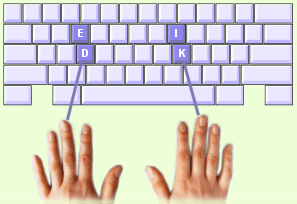

U zult nu de toetsen E en I gaan bestuderen. Deze toetsen liggen boven de basisrij op de "bovenste rij". U dient de E en de I met uw middelvingers te typen.
U zult merken dat uw andere vingers zich automatisch ook een beetje uitstrekken als u met uw middelvingers naar de E en I reikt. Dit is een natuurlijke beweging die u niet tegen hoeft te gaan, maar probeer hem wel tot een minimum te beperken. Vergeet niet uw vingers terug te zetten op de basisrij nadat u een toets op de bovenste rij heeft getypt. |
 |